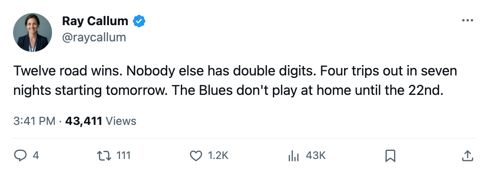

Notes from the West: St. Louis Has 12 Road Wins, More Than Any Other Club
The Blues start a four-game road trip tomorrow carrying the league's best road win total
 Ray CallumSenior correspondent · Home Ice Network
Ray CallumSenior correspondent · Home Ice Network
The piece
The  St. Louis Blues Blues have won 12 games on the road this season. No other club has more than 9.
St. Louis Blues Blues have won 12 games on the road this season. No other club has more than 9.
STL is 12-4 away from the Scottrade Center. The  New Jersey Devils Devils sit at 9-3 on the road, and
New Jersey Devils Devils sit at 9-3 on the road, and  Toronto Maple Leafs carries a 9-1 mark in 10 road appearances. St. Louis has played 16 road games, more than any club outside the East's top four.
Toronto Maple Leafs carries a 9-1 mark in 10 road appearances. St. Louis has played 16 road games, more than any club outside the East's top four.
St. Louis Blues sits 2nd in the West at 41 points, one ahead of  Nashville Predators with a game in hand: 28 played to Nashville's 29. The Blues have scored 81 goals and allowed 70 across those 28 games. Their +11 goal differential ties Nashville for second in the conference behind
Nashville Predators with a game in hand: 28 played to Nashville's 29. The Blues have scored 81 goals and allowed 70 across those 28 games. Their +11 goal differential ties Nashville for second in the conference behind  Dallas Stars at +17.
Dallas Stars at +17.
The road trip begins tomorrow
They travel to  New York Rangers on December 16, then
New York Rangers on December 16, then  Montreal Canadiens on December 17,
Montreal Canadiens on December 17,  Ottawa Senators on December 19, and Toronto Maple Leafs on December 21. The Rangers won the only meeting between these clubs, 5-1. St. Louis Blues enters the trip on a 2-game winning streak and 8 wins in their last 10, with 30 goals for and 23 against in that stretch.
Ottawa Senators on December 19, and Toronto Maple Leafs on December 21. The Rangers won the only meeting between these clubs, 5-1. St. Louis Blues enters the trip on a 2-game winning streak and 8 wins in their last 10, with 30 goals for and 23 against in that stretch.
Six straight wins came before a 2-game slide interrupted the run. The Blues have won their last two to restart it.
 Chris Osgood84 has started 23 of 28 games. Only three goaltenders carry a higher share of their club's starts:
Chris Osgood84 has started 23 of 28 games. Only three goaltenders carry a higher share of their club's starts:  Johan Hedberg87 at 96% for
Johan Hedberg87 at 96% for  Pittsburgh Penguins,
Pittsburgh Penguins,  Roman Cechmanek92 at 93% for
Roman Cechmanek92 at 93% for  Los Angeles Kings, and
Los Angeles Kings, and  Nikolai Khabibulin91 at 90% for
Nikolai Khabibulin91 at 90% for  Tampa Bay Lightning.
Tampa Bay Lightning.  Brent Johnson84 has 7 starts.
Brent Johnson84 has 7 starts.
 Fred Brathwaite79 has not played for St. Louis Blues this season. Osgood carries the load and the Blues are 12-4 when he is in the building's other end.
Fred Brathwaite79 has not played for St. Louis Blues this season. Osgood carries the load and the Blues are 12-4 when he is in the building's other end.
Four road games in seven nights.
